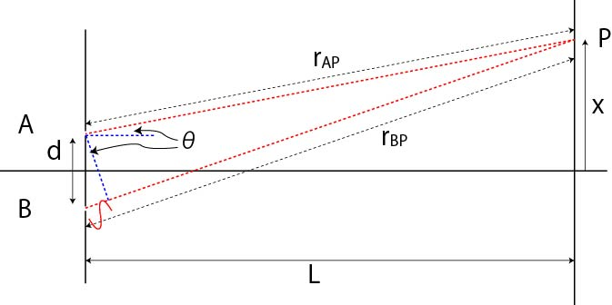

回折-01
二重スリットの回折
高校時代に習った，ヤングの実験，ここから光の回折現象を理解していきましょう．

左の縦線部分に，A，Bのスリットが開いています．
ここから右側に発せられた光は波のように広がり，お互いに干渉します．
スクリーン上のP点（原点からｘだけ離れた場所）に到達する各光線，rAP，rBP，においてちょうど波長分の光路差がある場合，干渉は一番強くなり，P点に輝点（輝線？）が生じます．
近似１
これらの光路差は，
\(\Large | r_{AP} - r_{B} | = \sqrt{ L^2 + ( x + \frac{d}{2} )^2} - \sqrt{ L^2 + ( x - \frac{d}{2} )^2} \)
となります．ここで，
ｄ ： スリットの間隔
L ： スリットとスクリーンとの間隔
ｘ ： スクリーン上で輝線が現れる位置
です．
この光路差が波長と等しくなるので，
\(\Large \lambda = \sqrt{ L^2 + ( x + \frac{d}{2} )^2} - \sqrt{ L^2 + ( x - \frac{d}{2} )^2} \)
近似２
ここで，
L >> d
とした場合，どうなるでしょう？
ｄに比べてLが非常に長いので，各光線，rAP，rBP，はほとんど平行になるはずです．
すると上記の式はもっと簡単になって，
\(\Large \lambda = d \sin \theta \)
となります．
これが高校時代に習った式ですね．
近似３
さらに，
L >> d, x
とした場合，どうなるでしょう？
ｄ, x，に比べてLが非常に長いので，
\(\Large \sin \theta \simeq \tan \theta \)
となり，上記の式はもっと簡単になって，
\(\Large \lambda = d \frac{x}{L} \)
となります．
ｎ次光
ちょうど二波長分の光路差がついた場合にまた輝線が現れるので，ｎ次光の場合には，
近似１
\(\Large n \lambda = \sqrt{ L^2 + ( x + \frac{d}{2} )^2} - \sqrt{ L^2 + ( x - \frac{d}{2} )^2} \)
近似２
\(\Large n \lambda = d \sin \theta \)
近似３
\(\Large n \lambda = d \frac{x}{L} \)
となります．
次に，実際にどのようなパターンになっていくかを，近似３を用いて考えていきましょう．